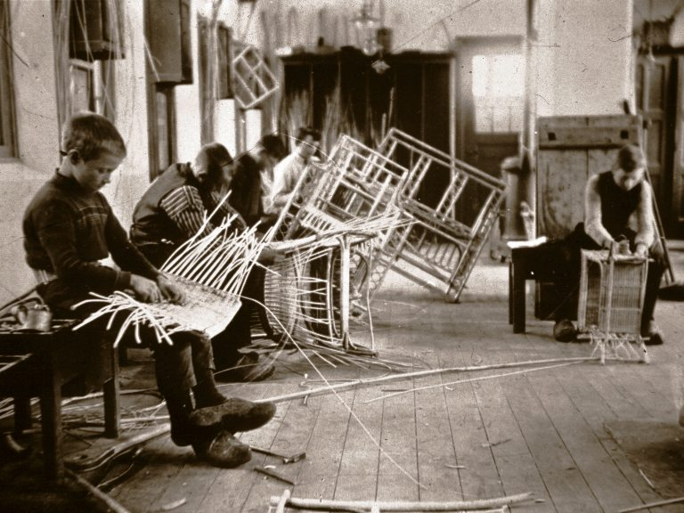
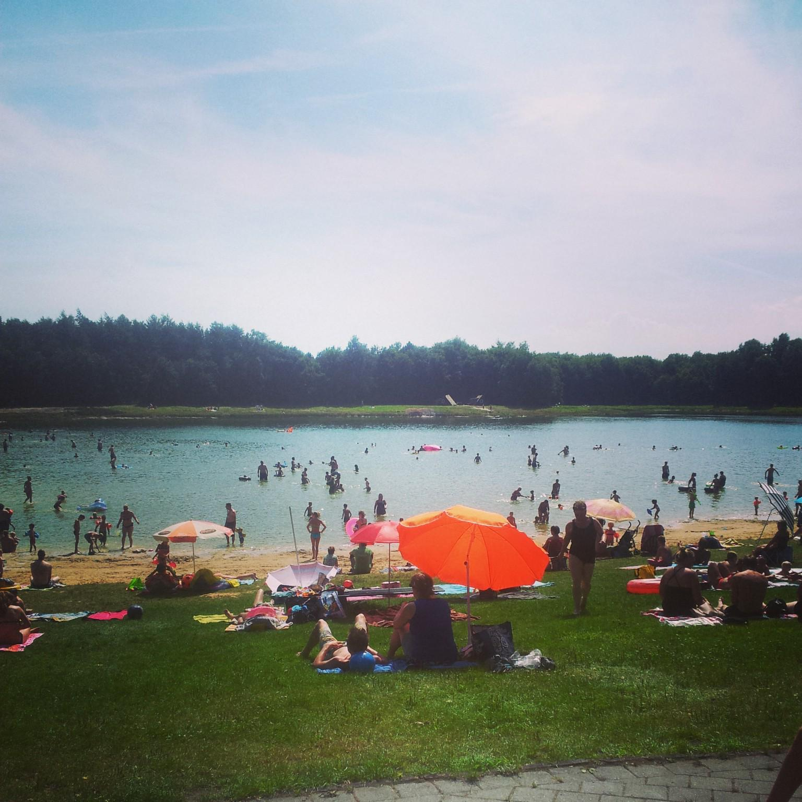

 Het Nationaal Vlechtmuseum is een museum gevestigd in de voormalige Rijksrietvlechtschool in het Friese Noordwolde. Het museum toont de sociale en culturele geschiedenis van Noordwolde als vlechtdorp. Daarnaast geeft de collectie een beeld van vlechtkunst en vlechtgeschiedenis uit de hele wereld.
 De Spokeplas bij Noordwolde behoort tot de schoonste en betrouwbaarste zwemwaters in deze regio. Op een zonnige dag is het goed vertoeven bij het bosmeertje. Vooral voor kinderen is het een ideale plaats om te ravotten. Rond het water zijn leuke speelmogelijkheden, bossen en een kiosk. De Spokeplas is als zandwinplaats ontstaan. De nergens echt diepe plas heeft een open karakter. Er zijn toiletten, douches, baby-room en een invalidentoilet aanwezig. Er ligt in de plas ook een eiland.